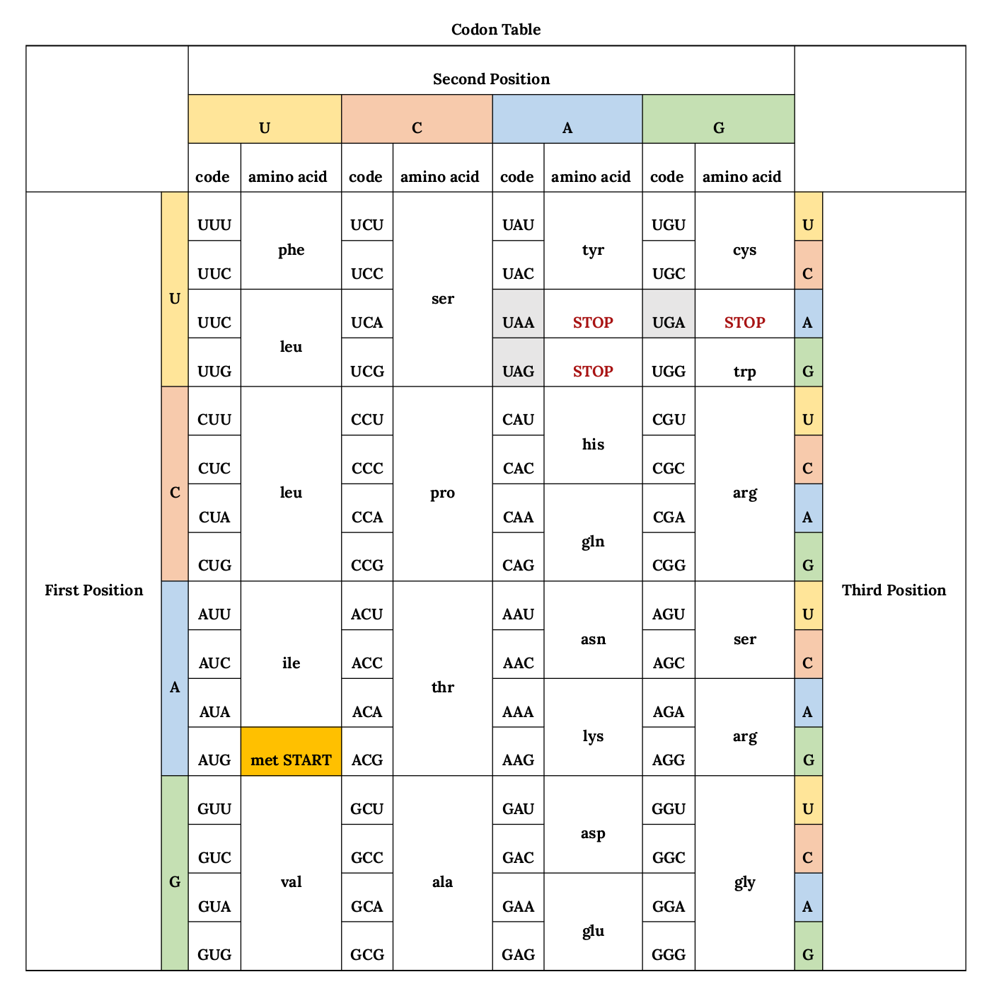

Tipos de mutaciones
Sustituciones (transiciones y transversiones), inserciones y deleciones. Haz clic sobre una base para fijar la diana y aplica una mutación.
Haz clic sobre una base de la hebra de referencia para fijar la diana y pulsa un tipo de mutación. Observa cómo cambia la agrupación en codones y la proteína resultante.
Controles de mutación · diana:
Estado del sistema
Regla del marco de lectura
Efectos sobre la proteína
Laboratorio de código genético: ADN → ARNm → proteína. Selecciona un escenario y observa la traducción y sus consecuencias.

Estado del sistema
Mutaciones en regiones reguladoras
Recesivas vs. dominantes
Origen de las mutaciones
Espontáneas (errores de replicación, mutágenos ambientales) o inducidas experimentalmente (mutagenesis). Selecciona un agente para visualizar el daño en el ADN.
Efectos sobre los rasgos — ejemplos
sugary1 (su1) — maíz dulce
Enzima defectuosa para la biosíntesis de almidón: el azúcar es 3× mayor que el silvestre y se acumula fitoglucógeno (textura cremosa). Base del maíz dulce comercial.
Rht-1 — «gen de la revolución verde»
Represor DELLA de la señalización de giberelinas (GA) resistente a degradación: la planta no responde a GA y es enana. El fenotipo es suficiente para inducir enanismo.
tb1 — teosinte → maíz
Un transposón insertado en la región reguladora de tb1 causa fuerte expresión del gen: mayor dominancia apical y supresión de la ramificación excesiva.
Mutagenesis experimental — notas
Actividades de práctica
Basadas en la Actividad 1 del documento. Clasifica cada mutación y recibe retroalimentación inmediata.